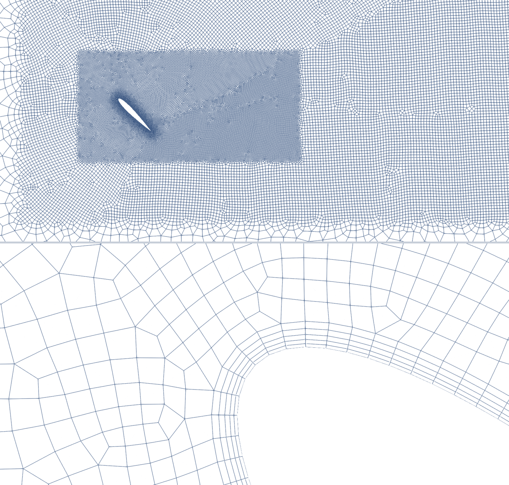
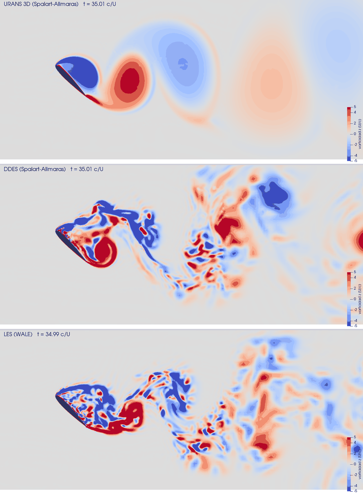
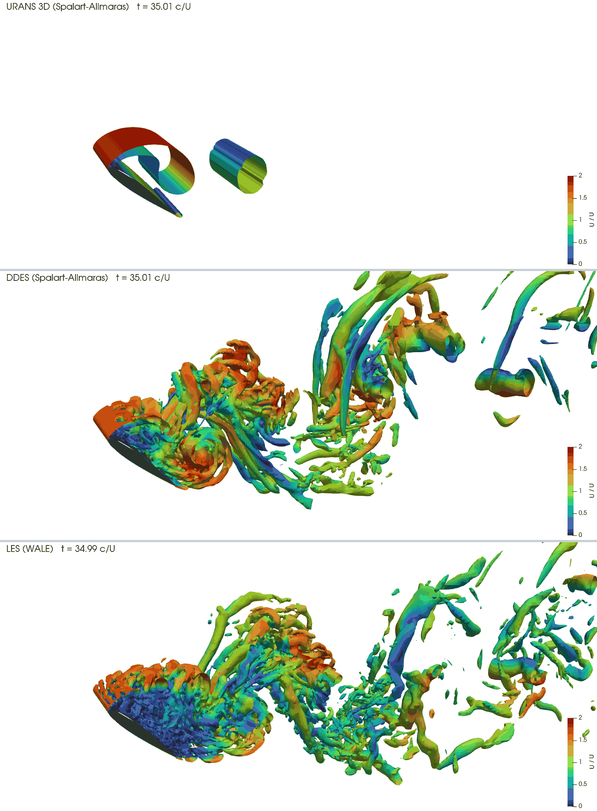

At 45° the flow leaves the NACA 0012 at both edges and the wake is a street of large eddies. The same case, computed four ways, shows what each turbulence treatment resolves, what it costs, and how far its lift and drag land from the wind tunnel.
OpenFOAM · Flujo incompresible · Tutorial 2.4
El perfil en pérdida: URANS, DDES y LES
A 45° el flujo se desprende del NACA 0012 por los dos bordes y la estela es una calle de remolinos grandes. El mismo caso, calculado de cuatro maneras, muestra qué resuelve cada tratamiento de la turbulencia, cuánto cuesta y qué tan lejos del túnel de viento quedan su sustentación y su resistencia.
OpenFOAM · Inkompressible Strömung · Tutorial 2.4
Das abgerissene Profil: URANS, DDES und LES
Bei 45° löst die Strömung an beiden Kanten des NACA 0012 ab, und der Nachlauf ist eine Straße großer Wirbel. Derselbe Fall, auf vier Arten gerechnet, zeigt, was jede Turbulenzbehandlung auflöst, was sie kostet und wie weit Auftrieb und Widerstand vom Windkanal entfernt liegen.
Estimated reading: 50 min (plus a quarter of an hour of computing in 2D and about a day per 3D model)Lectura estimada: 50 min (y un cuarto de hora de cálculo en 2D y alrededor de un día por modelo en 3D)Lesedauer: ca. 50 min (dazu eine Viertelstunde Rechenzeit in 2D und etwa einen Tag je 3D-Modell)Level: undergraduateNivel: licenciaturaNiveau: BachelorVerified on OpenFOAM 12 (blueCFD-Core 2024), Gmsh 4.15.2 and ParaView 5.11.2Verificado en OpenFOAM 12 (blueCFD-Core 2024), Gmsh 4.15.2 y ParaView 5.11.2Geprüft mit OpenFOAM 12 (blueCFD-Core 2024), Gmsh 4.15.2 und ParaView 5.11.2
Full English translation in preparation. Each section below carries a summary of its content; the complete text, figures and tables are available in the Spanish version, which the ES button above selects.
Explain what URANS, DDES and LES resolve and what they model; run the same transient case with each; average a fluctuating force coefficient in time and estimate its standard error; compare the four results with wind-tunnel data and with their cost.
The problem
An airfoil that behaves like a bluff body
At 45° the NACA 0012 is deep in stall: the flow separates at both edges and sheds a vortex street, like a flat plate. The Sandia data (Sheldahl and Klimas, 1981) give C_L = 1.085 and C_D = 1.075. Which turbulence treatment gets there?
The theory
Averaging, filtering and the hybrid
Averaged versus filtered equations; Spalart-Allmaras, the DDES length scale and the WALE subgrid model; why a URANS in 3D stays two-dimensional; the Strouhal number with the projected height; time averages, fluctuation and the standard error from blocks.
Step by step
One case, four runs
One case, perfil-perdida, with ./Allrun urans2d|urans|ddes|les: Gmsh builds the 2D or the 3D mesh, the script picks the model and the schemes and runs foamRun up to t = 40 chords; ./promedios gives the averages and their standard error.
The case
The mesh and the dictionaries
The mesh (43,141 cells in 2D, 1,380,512 in 3D, with a wall function), the three momentumTransport files, the two fvSchemes files, fvSolution, controlDict and the functions.
Worked example
Four calculations against the wind tunnel
From t = 20 to 40: URANS 2D C_L 1.714, C_D 1.762; URANS 3D 1.713 and 1.763 (the same: the flow stays 2D); DDES 1.532 and 1.559; LES 1.179 and 1.193; tunnel 1.085 and 1.075. URANS overestimates drag by 64 %, DDES by 45 %, LES by 11 %. The 3D runs cost about a day each; the 2D URANS, 38 minutes.
Common errors
Six ways to waste a day of computing
Periodic span boundaries (ten times more pressure iterations); y⁺ ≈ 1 in a separated flow (a time step three times smaller); a sharp trailing edge; averaging from t = 0; averaging without the time-step weight; trusting two equal halves as a converged mean.
Suggested exercise
Five degrees either way
Run the 2D URANS at 40° and 50°, compare with the Sandia table and decide whether its error depends on the angle.
Sources
References
Sheldahl and Klimas (1981) for the wind-tunnel data; Spalart and Allmaras (1994); Spalart et al. (2006) and Spalart (2009) on DES and DDES; Nicoud and Ducros (1999) on WALE; Fage and Johansen (1927) on the inclined plate; Shur, Spalart, Strelets and Travin (1999) for the idea of the case.
Objetivos de aprendizaje
Qué se debe poder hacer al terminar
Los tutoriales 2.1 y 2.2 calcularon el NACA 0012 con el flujo pegado, donde un cálculo estacionario con Spalart-Allmaras basta. Esta guía lo pone a 45°, en pérdida profunda, donde el flujo nunca se está quieto, y lo calcula de cuatro maneras sobre la misma malla.
Explicar qué resuelve y qué modela un URANS, un DDES y un LES.
Correr el mismo caso transitorio con cada uno, cambiando sólo el argumento del Allrun.
Promediar en el tiempo un coeficiente que oscila y estimar el error de su media.
Explicar por qué un URANS en 3D da lo mismo que en 2D.
Comparar los cuatro resultados con el túnel de viento y con lo que cuestan.
Qué hace falta. blueCFD-Core 2024 (OpenFOAM 12), Gmsh 4.15.2 en el PATH como en el tutorial 2.1, y el caso perfil-perdida.zip. El URANS 2D tarda 13 minutos con 4 núcleos; cada cálculo 3D, alrededor de un día con 8 núcleos (tabla 4). Las cifras de esta guía son de las cuatro corridas completas; quien no tenga un día de cómputo puede seguirla con el URANS 2D y los datos de aquí.
El problema
Un perfil que se comporta como un cuerpo romo
Por debajo de la pérdida —en la polar del 2.2, hasta unos 16° a \(Re\) = 6·10⁶—, el NACA 0012 trabaja con el flujo pegado: la capa límite sigue la superficie y la estela es delgada. Pasada la pérdida, el flujo se desprende; a 45° se desprende desde los dos bordes, y el perfil se comporta como una placa inclinada: un cuerpo romo. Detrás de él se forma una calle de remolinos que se desprenden alternadamente de un borde y del otro, y la sustentación y la resistencia oscilan con ellos.
Los perfiles en pérdida profunda no son una curiosidad: los álabes de un aerogenerador de eje vertical pasan por todos los ángulos en cada vuelta, y para diseñarlos se midieron los perfiles NACA de 0 a 180°. De esas mediciones, las de Sandia (Sheldahl y Klimas, 1981), sale la referencia de esta guía: a 45°, \(C_L\) = 1.085 y \(C_D\) = 1.075. Se toma \(Re\) = 5·10⁵, la media de las tres del túnel; el informe advierte que, en pérdida profunda, sus datos casi no dependen de \(Re\) y que tienen dispersión.
La pregunta: ¿qué tratamiento de la turbulencia llega a esas cifras, y a qué precio? Es el caso con el que se presentó la simulación de remolinos separados (Shur, Spalart, Strelets y Travin, 1999): un perfil a ángulos grandes, con una cuerda de envergadura.
La teoría
Promediar, filtrar y el híbrido
Promediar o filtrar
Un URANS (unsteady RANS) resuelve las ecuaciones promediadas, como el RANS del 2.1, con la derivada en el tiempo. El modelo de turbulencia —aquí Spalart-Allmaras (Spalart y Allmaras, 1994), el de los tutoriales 2.1 y 2.2— representa con una viscosidad turbulenta \(\nu_t\) el efecto de todos los remolinos. Lo que queda en el tiempo es sólo lo más lento y más grande: el desprendimiento alternado, como si fuera una oscilación del flujo medio.
Un LES (large-eddy simulation) resuelve las ecuaciones filtradas: calcula los remolinos más grandes que el filtro, del tamaño de la celda,
\[ \Delta = V_{celda}^{1/3} \tag{1} \]
y modela sólo los más pequeños, con una viscosidad de submalla \(\nu_{sgs}\). El modelo de esta guía es WALE (Nicoud y Ducros, 1999), que calcula \(\nu_{sgs}\) con el gradiente de la velocidad y la apaga sola donde el flujo sólo gira o sólo se corta, como junto a una pared. Un LES propiamente dicho pide resolver también los remolinos de la capa límite, con celdas de y⁺ ≈ 1 y muy finas a lo largo de la pared; esta malla no las tiene, y el LES de esta guía usa la misma función de pared que los otros cálculos. Es la comparación honesta de lo que pasa cuando se usa un LES donde la malla no le alcanza.
Un DDES (delayed detached-eddy simulation) es el híbrido del tutorial 3.7: Spalart-Allmaras en la capa límite y LES lejos de la pared. El modelo compara la escala de la turbulencia con la de la malla, y donde la malla es más fina, baja su viscosidad y deja que el cálculo resuelva los remolinos (Spalart et al., 2006; Spalart, 2009):
\[ l_{DDES} = d - f_d\,\max\left(0,\; d - C_{DES}\,\Delta\right) \tag{2} \]
donde \(d\) es la distancia a la pared (la escala de Spalart-Allmaras), \(C_{DES}\) = 0.65 y \(f_d\) vale 0 dentro de la capa límite (RANS) y 1 fuera de ella (LES).
Por qué un URANS en 3D se queda en 2D
El perfil, la corriente y las fronteras son iguales en toda la envergadura. Para que el flujo cambie a lo largo de ella, alguna perturbación tiene que crecer en esa dirección. En un LES o un DDES crecen: la viscosidad del modelo es chica y las capas que se desprenden se vuelven inestables en las tres direcciones. En un URANS, la viscosidad turbulenta es enorme —en la estela, miles de veces la del aire (punto 4 del ejemplo resuelto)— y amortigua cualquier perturbación más chica que los remolinos grandes. El flujo empieza siendo igual en toda la envergadura y lo sigue siendo: el URANS 3D es el 2D repetido 32 veces.
La frecuencia del desprendimiento
En un cuerpo romo, la frecuencia \(f\) de los remolinos se escribe sin dimensiones con el número de Strouhal. Para una placa inclinada, la longitud que lo hace casi constante es la altura que el perfil le presenta a la corriente, \(c\,\mathrm{sen}\,\alpha\) (Fage y Johansen, 1927):
\[ St = \frac{f\, c\,\mathrm{sen}\,\alpha}{U_\infty} \approx 0.15 \tag{3} \]
Con \(c\) = 1 m y \(U_\infty\) = 1 m/s, el tiempo se mide en cuerdas recorridas (\(c/U_\infty\) = 1 s): la ecuación (3) predice \(f \approx\) 0.15/sen 45° = 0.21 \(U_\infty/c\), un remolino de cada lado cada unas cinco cuerdas.
Lo que se reporta de un cálculo transitorio
Los coeficientes se definen como en el 2.1, con el área de referencia de la envergadura calculada, \(A_{ref} = b\,c\) = 1 m² (en 2D, la capa de una cuerda de espesor):
Como oscilan, se reporta su media en el tiempo a partir de que el flujo olvidó el arranque. El paso de tiempo cambia en cada paso (se ajusta para que el número de Courant no pase de 0.9), así que cada muestra pesa lo que dura su paso:
La desviación estándar dice cuánto oscila el coeficiente, no qué tan bien se conoce su media. Para eso se parte el registro en \(N\) tramos de por lo menos un periodo, se promedia cada uno y se toma el error estándar de esas medias, como en el tutorial 3.6:
El caso perfil-perdida.zip se descomprime en $FOAM_RUN. Trae el .geo, los diccionarios de los cuatro cálculos y dos guiones: promedios (esta guía) y serie (el tutorial 2.5). En la terminal de blueCFD-Core:
Gmsh en el PATH:export PATH="$PATH:/c/gmsh-4.15.2-Windows64", como en el 2.1.
El URANS 2D.cd $FOAM_RUN/perfil-perdida y ./Allrun urans2d 4. El Allrun hace la malla de una capa, cambia los parches, copia el modelo y los esquemas del URANS y corre foamRun en 4 procesos hasta t = 40. Responde con
$ ./Allrun urans2d 4
Running gmshToFoam on …/perfil-perdida
Running checkMesh on …/perfil-perdida
Running decomposePar on …/perfil-perdida
Running foamRun in parallel on …/perfil-perdida using 4 processes
Vigilarlo desde otra terminal: tail -f postProcessing/fuerzas/0/forceCoeffs.dat | cut -f 1-4 (el tiempo, \(C_m\), \(C_D\) y \(C_L\); el archivo trae seis columnas, demasiado anchas para la terminal), o foamMonitor -l "postProcessing/residuals(p,U)"/*/residuals.dat y foamMonitor postProcessing/fuerzas/0/forceCoeffs.dat. Los residuos no quedan en la carpeta 0: la función empieza a escribir en el primer paso de tiempo y nombra la carpeta con él (0.000895095 en la prueba), por eso el *. En la prueba de esta guía tardó 13 minutos.
Los promedios:./promedios (de t = 20 a 40) y ./promedios 20 40 5 (además, los cuatro tramos de 5 c/U y el error estándar de la ecuación 6).
Un cálculo 3D en una copia del caso, para no mezclar corridas: cd $FOAM_RUN, cp -r perfil-perdida perdida-ddes, cd perdida-ddes y ./Allrun ddes 8. Lo mismo con urans y les. Cada uno tarda alrededor de un día con 8 núcleos, y conviene correrlos uno tras otro: dos a la vez se reparten los núcleos y cada uno tarda el doble. La terminal no se cierra mientras corre: cerrarla mata los procesos.
Los promedios de cada cálculo 3D, igual que en el paso 4, en su carpeta.
¿Por qué 40 cuerdas? Las primeras 20 son el arranque: el flujo sale del reposo, el desprendimiento se forma y tarda en olvidar cómo empezó (error 4). Las otras 20 son cuatro periodos de desprendimiento, para los promedios. Con el URANS 2D se comprobó que alargar hasta 60 cuerdas cambia el promedio de \(C_D\) en 0.04 %.
El caso
La malla y los diccionarios
La malla la hace Gmsh con perdida.geo, como en los tutoriales 2.1 y 2.2.3 de Gmsh, pero con otra forma (tabla 1 y figura 1). El perfil se gira, no la corriente: el aire entra en \(+x\) y la estela queda dentro de dos cajas de celdas uniformes, que son la zona donde el DDES y el LES resuelven los remolinos.
Valor
Perfil
NACA 0012, cuerda \(c\) = 1 m, a \(\alpha\) = 45°; borde de salida cerrado con un semicírculo
Corriente
\(U_\infty\) = 1 m/s, \(\nu\) = 2·10⁻⁶ m²/s: \(Re\) = 5·10⁵; el tiempo se mide en cuerdas recorridas, \(c/U_\infty\) = 1 s
Dominio
de −15 c a +30 c en \(x\) y ±15 c en \(y\); envergadura de 1 c
Malla 2D (URANS 2D)
43 141 celdas, una capa con caras empty
Malla 3D (URANS, DDES y LES)
1 380 512 celdas: la misma, extruida en 32 capas (Δz = 0.031 c), con caras symmetry en los extremos
Calidad (checkMesh)
no ortogonalidad máxima 36.7°, relación de aspecto máxima 39.9: Mesh OK
Pared
primera celda de 10⁻³ c y nutUSpaldingWallFunction; y⁺ medido: promedio 13, máximo 37
Estela
dos cajas de celdas uniformes: 0.025 c hasta 4 c detrás del perfil y 0.06 c hasta 12 c
Paso de tiempo
ajustable con \(Co_{máx}\) = 0.9
Tabla 1.El caso. Las cifras de la malla son de checkMesh; el y⁺ es el que mide foamPostProcess -func yPlus en el último tiempo de la corrida (en la tabla, el del URANS 2D; el del DDES es casi igual).

Figura 1.La malla. Arriba, el perfil girado 45° y las dos cajas de celdas uniformes que cubren la estela (la cercana, de 0.025 c, hasta 4 c detrás del perfil; la lejana, de 0.06 c, hasta 12 c). Abajo, el borde de ataque: la capa de cuadriláteros pegada a la pared, con la primera celda de 10⁻³ c. Es la malla 2D; la 3D la repite en 32 capas.
Dos decisiones de la malla vienen de errores de esta guía. La pared usa función de pared en lugar de resolver la capa límite (error 2), y los extremos de la envergadura son planos de simetría en lugar de caras periódicas (error 1). Con una cuerda de envergadura, la simetría impide que los remolinos crucen el extremo, pero deja que el flujo cambie a lo largo de la envergadura, que es lo que distingue al DDES y al LES del URANS.
Lo que cambia entre los cuatro cálculos lo decide el Allrun (tabla 2):
Cálculo
./Allrun …
Malla
Modelo
Esquema de U
URANS 2D
urans2d 4
1 capa, empty
SpalartAllmaras
linearUpwind
URANS 3D
urans 8
32 capas, symmetry
SpalartAllmaras
linearUpwind
DDES
ddes 8
32 capas, symmetry
SpalartAllmarasDDES
LUST
LES
les 8
32 capas, symmetry
WALE
LUST
Tabla 2.Los cuatro cálculos del mismo caso. Lo que el Allrun cambia según su primer argumento. El resto —el perfil, la corriente, las fronteras, el algoritmo PIMPLE y las funciones— es igual en los cuatro.
constant/momentumTransport.ddes
FoamFile
{
format ascii;
class dictionary;
location "constant";
object momentumTransport;
}
// * * * * * * * * * * * * * * * * * * * * * * * * * * * * * * * * * * * * * //
// DDES de Spalart-Allmaras: RANS junto a la pared, LES lejos de ella.
simulationType LES;
LES
{
model SpalartAllmarasDDES;
delta cubeRootVol;
cubeRootVolCoeffs
{
deltaCoeff 1;
}
turbulence on;
printCoeffs on;
}
// ************************************************************************* //
El LES es igual, con model WALE;; el URANS, simulationType RAS; con SpalartAllmaras. cubeRootVol es la \(\Delta\) de la ecuación (1).
backward es de segundo orden en el tiempo. LUST mezcla 75 % de interpolación lineal con 25 % de linearUpwind: el DDES y el LES necesitan poca disipación numérica, para que los esquemas no amortigüen los remolinos que el cálculo debe resolver. El URANS usa linearUpwind (system/fvSchemes.urans), como el 2.1.
PIMPLE con una sola pasada y dos correcciones de presión por paso es el algoritmo PISO: con \(Co \le\) 0.9 no hace falta relajar ni iterar dentro del paso.
system/controlDict
FoamFile
{
format ascii;
class dictionary;
location "system";
object controlDict;
}
// * * * * * * * * * * * * * * * * * * * * * * * * * * * * * * * * * * * * * //
application foamRun;
solver incompressibleFluid;
startFrom latestTime;
startTime 0;
stopAt endTime;
endTime 40; // 40 cuerdas recorridas: 20 de arranque y 20 para los promedios
deltaT 1e-3;
adjustTimeStep yes;
maxCo 0.9;
maxDeltaT 0.02;
writeControl adjustableRunTime;
writeInterval 5;
purgeWrite 0;
writeFormat binary;
writePrecision 8;
writeCompression off;
timeFormat general;
timePrecision 6;
runTimeModifiable true;
// las funciones (fuerzas y promedios) están en system/functions, que OpenFOAM 12 lee por su cuenta
// ************************************************************************* //
adjustTimeStep yes con maxCo 0.9: OpenFOAM elige en cada paso el \(\Delta t\) más grande que no deja pasar de 0.9 al número de Courant, \(Co = |U|\Delta t/\Delta x\), en ninguna celda. La celda que manda es la más chica donde el aire va más rápido: la del borde de ataque o la del semicírculo del borde de salida.
Las fuerzas y los promedios de los campos están en system/functions. La primera línea escribe \(C_L\), \(C_D\) y \(C_m\) (respecto a \(c/4\)) en cada paso, en postProcessing/fuerzas/0/forceCoeffs.dat; promedios acumula, desde t = 20, la media de U y p. El resto del archivo —la vorticidad, Q y las superficies de la animación— es el tema del 2.5.
Ejemplo resuelto
Cuatro cálculos contra el túnel
Enunciado: con las cuatro corridas de 40 cuerdas, comparar con el túnel la sustentación y la resistencia medias, su oscilación y su frecuencia, y lo que cuesta cada una.
1. El arranque y la ventana de los promedios
Figura 2.La sustentación en el tiempo. Los cuatro cálculos arrancan del flujo uniforme. El URANS 3D (discontinuo) queda encima del 2D en todo el registro: no se distinguen. El DDES oscila tanto como el URANS, pero con menos orden y alrededor de un valor más bajo; el LES oscila mucho menos y queda cerca del túnel (verde).
Los cuatro cálculos arrancan del aire uniforme y tardan en formar la estela (figura 2). El URANS se asienta pronto en una oscilación regular; el DDES tarda más: hasta t ≈ 14 sus promedios por tramos de 2 c/U andan entre 1.74 y 2.38 en \(C_D\), y de ahí en adelante, más abajo. Por eso los promedios empiezan en t = 20.
2. Los números
En la carpeta del DDES:
$ ./promedios 20 40 5
De t = 20 a 40 c/U (17005 pasos)
media desv. mín. máx.
Cl 1.5319 0.2879 1.0379 2.3158
Cd 1.5588 0.2500 1.0768 2.2497
Cm 0.4689 0.1300 0.2814 0.7815
Tramos de 5 c/U
Cl Cd
20 a 25 1.4874 1.5135
25 a 30 1.5545 1.6051
30 a 35 1.7565 1.7796
35 a 40 1.3291 1.3370
error estándar 0.0885 0.0923
Los cuatro cálculos, con su error estándar (tabla 3):
Cálculo
\(C_L\)
\(C_D\)
\(\sigma(C_L)\)
\(C_L\) mín. – máx.
\(f\)
Contra el túnel
URANS 2D
1.714 ± 0.003
1.762 ± 0.004
0.248
1.38 – 2.15
0.20
+58 % / +64 %
URANS 3D
1.713 ± 0.003
1.763 ± 0.004
0.249
1.38 – 2.15
0.20
+58 % / +64 %
DDES
1.532 ± 0.088
1.559 ± 0.092
0.288
1.04 – 2.32
0.20
+41 % / +45 %
LES
1.179 ± 0.023
1.193 ± 0.025
0.091
1.03 – 1.41
0.25
+9 % / +11 %
Túnel (Sandia)
1.085
1.075
Tabla 3.Los cuatro cálculos contra el túnel. Promedios en el tiempo de t = 20 a 40 c/U, con el peso del paso de tiempo (el guion promedios); el ± es el error estándar de la media con cuatro tramos de 5 c/U, un periodo del desprendimiento (./promedios 20 40 5). \(\sigma\) es la desviación estándar de \(C_L\): cuánto oscila, no la incertidumbre de la media. \(f\) es la frecuencia más fuerte de \(C_L\), en \(U_\infty/c\), con una resolución de 0.05. El túnel: Sheldahl y Klimas (1981), NACA 0012 a 45°.
El URANS sobrestima la resistencia en +64 % y la sustentación en +58 %; el DDES, en +45 % y +41 %; el LES, en +11 % y +9 %. Los errores de la media son muy distintos: ±0.004 en el URANS, que oscila como un reloj; ±0.025 en el LES; y ±0.092 en el DDES, cuyos tramos de 5 c/U van de 1.34 a 1.78 (error 6). Aun con ese error, las diferencias entre los modelos son mucho mayores que la incertidumbre de cada media: no son ruido.
La frecuencia del URANS es 0.20 \(U_\infty/c\): un periodo de 5.0 cuerdas y \(St\) = 0.14 con la altura proyectada, el valor de una placa inclinada (ecuación 3). El DDES tiene la misma frecuencia dominante, pero su \(C_L\) va de 1.04 a 2.32: los remolinos ya no son todos iguales. El LES oscila tres veces menos (\(\sigma\) = 0.091), y su pico está en 0.25 \(U_\infty/c\): la calle de remolinos ordenada casi desaparece. Con 20 c/U de registro, la resolución en frecuencia es de 0.05 \(U_\infty/c\): las dos son aproximadas.
3. El URANS 3D da lo mismo que el 2D
A tres cifras: \(C_L\) = 1.713 contra 1.714, \(C_D\) = 1.763 contra 1.762, la misma oscilación y la misma frecuencia. El flujo se quedó bidimensional, como predice la teoría: las isosuperficies del URANS 3D son rodillos rectos e idénticos en toda la envergadura (figura 4, arriba). Fueron 28 horas de cálculo para la respuesta que el 2D da en 38 minutos. La mejora del DDES y del LES no viene de calcular en 3D, sino de resolver los remolinos.
4. La estela

Figura 3.La estela de los tres cálculos 3D. La vorticidad \(\omega_z\) en el plano medio de la envergadura, de −5 a 5 \(U_\infty/c\), en t ≈ 35: URANS 3D arriba, DDES en medio y LES abajo. El URANS da remolinos grandes y lisos que se difunden en unas cuantas cuerdas; el DDES y el LES, capas que se rompen en remolinos chicos desde los bordes del perfil.
En el plano medio de la envergadura (figura 3), el URANS da dos remolinos grandes por periodo, lisos, que se difunden en unas cuantas cuerdas. En el DDES y el LES, las capas que se desprenden de los bordes se rompen en remolinos chicos casi desde el perfil, y la estela es un revoltijo que conserva, a grandes rasgos, el vaivén de un lado al otro. Esos remolinos mezclan el aire lento de detrás del perfil con el de fuera, que es lo que en un cuerpo romo sube la presión de la cara trasera y baja la resistencia.
La viscosidad del modelo explica la diferencia. En t = 40, entre 0.5 y 4 c detrás del perfil, la mediana de \(\nu_t/\nu\) es 3 380 en el URANS, 0.3 en el DDES y 3.6 en el LES: el URANS calcula una estela miles de veces más «viscosa» que el aire, que no deja vivir a los remolinos chicos; en el DDES y el LES la viscosidad del modelo es del orden de la del aire, y los remolinos se resuelven.

Figura 4.Los remolinos en 3D. La isosuperficie \(Q\) = 5 \((U_\infty/c)^2\) coloreada por |U|, en el mismo instante y en el mismo orden. En el URANS son dos rodillos idénticos a lo largo de la envergadura, sólo junto al perfil: corriente abajo, la viscosidad turbulenta del modelo los difunde por debajo de ese valor. En el DDES y el LES, la estela es un enjambre de tubos que cambian a lo largo de la envergadura.Figura 5.La estela en movimiento. La misma vorticidad de t = 30 a 40 (dos periodos del desprendimiento), unos 400 cuadros por modelo, reproducidos en 13 s; URANS 3D arriba, DDES en medio y LES abajo. Cómo se hace es el tema del tutorial 2.5.
En movimiento (figura 5) la diferencia es todavía más clara: el URANS se repite igual en cada periodo; el DDES y el LES, nunca.
5. ¿Por qué el LES se acerca más?
Hay que decirlo con cuidado. El LES queda a 11 % del túnel, pero esta malla no resuelve la pared como lo pide un LES, y el informe de Sandia advierte que sus datos en pérdida profunda tienen dispersión. Lo que sí se puede afirmar es el orden: del URANS al DDES y al LES, cada vez más remolinos resueltos y menos resistencia, y el DDES, que deja a Spalart-Allmaras en la capa límite y junto a los bordes, queda en medio. Con esta malla, el DDES todavía le deja al modelo buena parte de las capas que se desprenden; el LES las resuelve desde el borde. Decidir cuál está bien, y no sólo cuál se acerca, pediría una malla más fina y una envergadura más larga (práctica sugerida, pregunta 4).
6. El costo
Cálculo
Celdas
Procesos
Δt medio (c/U)
\(Co_{máx}\)
Pasos
Segundos por paso
Horas
URANS 2D
43 141
4
1.33·10−3
0.90
45 299
0.05
0.6
URANS 3D
1 380 128
8
1.32·10−3
0.90
30 170
3.37
28.2
DDES
1 380 512
8
1.18·10−3
0.92
35 067
2.95
28.7
LES
1 380 512
8
1.30·10−3
0.91
33 499
2.48
23.1
Tabla 4.Lo que cuesta. En la laptop de la serie (8 núcleos, 16 GB). El Δt medio y el Courant máximo son los de t = 20 a 40; el número de pasos y las horas, los de toda la corrida (el URANS 2D llegó hasta t = 60).
El paso de tiempo es casi el mismo en los cuatro (tabla 4): lo fija el número de Courant en las celdas más chicas, que son iguales en 2D y en 3D. El 3D tiene 32 veces más celdas, y cada paso, con el doble de procesos, cuesta del orden de 59 veces más. El DDES y el LES cuestan por paso un poco menos que el URANS 3D (su presión converge con menos iteraciones): lo caro es la malla, no el modelo.
Resultado: el NACA 0012 a 45° da \(C_D\) = 1.762 con URANS (en 2D y en 3D), 1.559 ± 0.092 con DDES y 1.193 ± 0.025 con LES, contra 1.075 del túnel. El URANS sobrestima la resistencia en 64 %, porque su viscosidad turbulenta amortigua los remolinos de la estela; resolverlos la baja. Calcular en 3D con URANS no cambia nada: cuesta 45 veces más y da lo mismo.
Errores frecuentes
Seis maneras de perder un día de cálculo
Los seis salieron al preparar esta guía.
1. Caras periódicas en la envergadura
La forma clásica de calcular un tramo de ala «infinita» es unir los dos extremos de la envergadura con caras periódicas (cyclic): lo que sale por un lado entra por el otro. Con ellas, la presión necesitaba diez veces más iteraciones por paso. En una malla de prueba de 8 capas, la última corrección de presión de cada uno de los primeros 22 pasos tomó con cyclic 1000 iteraciones de GAMG (el máximo) en los primeros pasos y de 50 a 600 en los últimos; con symmetry, de 10 a 15. Ninguno de los cambios que se probaron lo arregló: otros suavizadores, PCG, otra aglomeración, un solucionador directo en el nivel más grueso, hacer la extrusión con extrudeMesh en vez de Gmsh. Las caras estaban bien emparejadas. Remedio: planos de simetría, como trae el caso. Con una cuerda de envergadura, la diferencia para los remolinos es pequeña; para el costo, enorme.
2. y⁺ ≈ 1 en un flujo desprendido
La primera malla ponía la primera celda en 4·10⁻⁵ c, para y⁺ ≈ 1, como el 2.1. En pérdida profunda, esas celdas tan delgadas junto al borde de ataque, por donde el aire pasa rapidísimo al rodearlo, fijaban el paso de tiempo: 4.6·10−4 c/U en promedio, contra 1.3·10−3 con la malla actual, 2.9 veces más chico. Las 40 cuerdas habrían sido 88 000 pasos, y en 3D la presión convergía mal con celdas de pared tan aplastadas contra Δz. Remedio: función de pared (nutUSpaldingWallFunction, que vale para cualquier y⁺) con la primera celda en 10⁻³ c. El flujo se desprende en los bordes, donde lo fija la geometría, no la capa límite: lo que se pierde al no resolverla es poco. El y⁺ medido quedó entre 1 y 37, con promedio de 13.
3. El borde de salida agudo
El NACA 0012 de la fórmula estándar deja el borde de salida abierto; la variante que lo cierra en punta obliga a Gmsh a poner en la punta un abanico de celdas diminutas (4·10⁻⁵ c por lado), y con ellas el paso de tiempo bajó a 1.2·10⁻⁵ c/U. Remedio: cerrar el borde estándar con un semicírculo de su medio espesor, 0.00126 c, como hace perdida.geo. Aun así, las celdas de ese semicírculo y las del borde de ataque son las que fijan el Courant máximo.
4. Promediar desde el arranque
$ ./promedios 0 40
De t = 0 a 40 c/U (35068 pasos)
media desv. mín. máx.
Cl 1.6907 4.6161 -110.6307 855.7036
Cd 1.7082 4.7354 -114.1009 878.7333
Cm 0.5253 1.6560 -38.9696 305.3301
(en el DDES). El primer paso, con el aire uniforme chocando contra el perfil, da coeficientes de cientos; los primeros periodos, una estela que todavía no es la del perfil. El promedio de 0 a 40 da \(C_D\) = 1.708, 10 % más que de 20 a 40. Remedio: mirar la historia (figura 2) antes de elegir dónde empieza el promedio.
5. Promediar sin el peso del paso de tiempo
Con adjustTimeStep, los pasos no duran lo mismo: cuando el Courant sube, en los momentos rápidos del desprendimiento, el paso se acorta y esos momentos dejan más muestras. El promedio simple de las muestras del URANS 2D, de 20 a 40, da \(C_D\) = 1.778 contra 1.762 de la ecuación (5): 0.9 % de diferencia, más que el error de la media del URANS. Remedio: el guion promedios, que pesa cada muestra con su paso.
6. Dos mitades iguales no prueban un promedio
Las dos mitades del DDES dan \(C_D\) = 1.559 y 1.558: parece un promedio firme a tres cifras. Pero sus cuatro tramos de 5 c/U van de 1.34 a 1.78, y el error estándar es ±0.092, unas veinte veces la diferencia entre las mitades. Que dos números coincidan puede ser suerte. Remedio: el error estándar con varios tramos de por lo menos un periodo (ecuación 6), y la cautela del 3.6: con cuatro tramos, el error estándar también es una estimación gruesa.
Práctica sugerida
Cinco grados de cada lado
Cinco grados de cada lado.
Enunciado. Calcular con el URANS 2D el mismo perfil a 40° y a 50°, llenar la tabla 5 y decidir si el exceso del URANS sobre el túnel depende del ángulo.
Condiciones. La malla, el modelo y el tiempo del caso; sólo cambia el ángulo, el parámetro alfa al principio de perdida.geo. Cada corrida tarda lo mismo que la de esta guía.
El procedimiento, en corto
cd $FOAM_RUN, cp -r perfil-perdida perdida-40 y, en perdida-40/perdida.geo, alfa = {40, …}.
./Allrun urans2d 4 y ./promedios 20 40 5.
Lo mismo a 50°.
Registro de resultados
\(\alpha\)
\(C_L\)
\(C_D\)
Túnel \(C_L\)
Túnel \(C_D\)
Exceso en \(C_D\)
45°
1.714
1.762
1.085
1.075
+64 %
40°
1.075
0.920
50°
1.040
1.215
Tabla 5.Registro de la práctica. URANS 2D con la malla del caso, de t = 20 a 40. El primer renglón es el de esta guía; el túnel, la tabla 2 de Sheldahl y Klimas (1981).
Preguntas que orientan la lectura
¿El exceso del URANS en \(C_D\) crece o baja con el ángulo? ¿Y en \(C_L\)?
Calcule el número de Strouhal con la altura proyectada (ecuación 3) en los tres ángulos. ¿Se mantiene cerca de 0.15?
¿Por qué no tiene caso repetir el ejercicio con el URANS 3D?
Para saber si el LES de esta guía acierta por buenas razones, ¿qué cambiaría primero: la envergadura, la malla junto a la pared o la de la estela? ¿Cuánto costaría, con la tabla 4?
Fuentes
Referencias
Fage, A. y Johansen, F. C. (1927). On the flow of air behind an inclined flat plate of infinite span. Proceedings of the Royal Society of London A, 116, 170–197.
Nicoud, F. y Ducros, F. (1999). Subgrid-scale stress modelling based on the square of the velocity gradient tensor. Flow, Turbulence and Combustion, 62, 183–200.
Sheldahl, R. E. y Klimas, P. C. (1981). Aerodynamic characteristics of seven symmetrical airfoil sections through 180-degree angle of attack for use in aerodynamic analysis of vertical axis wind turbines (SAND80-2114). Sandia National Laboratories.
Shur, M., Spalart, P. R., Strelets, M. y Travin, A. (1999). Detached-eddy simulation of an airfoil at high angle of attack. En W. Rodi y D. Laurence (eds.), Engineering Turbulence Modelling and Experiments 4. Elsevier.
Spalart, P. R. (2009). Detached-eddy simulation. Annual Review of Fluid Mechanics, 41, 181–202.
Spalart, P. R. y Allmaras, S. R. (1994). A one-equation turbulence model for aerodynamic flows. La Recherche Aérospatiale, 1, 5–21.
Spalart, P. R., Deck, S., Shur, M. L., Squires, K. D., Strelets, M. Kh. y Travin, A. (2006). A new version of detached-eddy simulation, resistant to ambiguous grid densities. Theoretical and Computational Fluid Dynamics, 20, 181–195.
Las cifras son de cuatro corridas hechas del 2 al 6 de noviembre de 2026 en la misma computadora, con blueCFD-Core 2024 (OpenFOAM 12), Gmsh 4.15.2 y el caso de esta guía; las imágenes, de ParaView 5.11.2 sin ventana (pvbatch) sobre esas corridas. Del artículo de Shur y colaboradores sólo se toma la idea del caso: no se usa ninguna de sus cifras.
Lernziele
Was Sie danach können sollten
Vollständige deutsche Übersetzung in Vorbereitung. Jeder Abschnitt enthält eine Zusammenfassung; der vollständige Text mit Abbildungen und Tabellen liegt in der spanischen Fassung vor, die über die Schaltfläche ES oben erreichbar ist.
Erklären, was URANS, DDES und LES auflösen und was sie modellieren; denselben instationären Fall mit jedem Verfahren rechnen; einen schwankenden Kraftbeiwert zeitlich mitteln und seinen Standardfehler schätzen; die vier Ergebnisse mit Windkanaldaten und mit ihren Kosten vergleichen.
Das Problem
Ein Profil, das sich wie ein stumpfer Körper verhält
Bei 45° ist das NACA 0012 tief im Strömungsabriss: Die Strömung löst an beiden Kanten ab und bildet eine Wirbelstraße wie eine ebene Platte. Die Sandia-Daten (Sheldahl und Klimas, 1981) ergeben C_L = 1,085 und C_D = 1,075. Welche Turbulenzbehandlung kommt dorthin?
Die Theorie
Mitteln, Filtern und der Hybrid
Gemittelte gegen gefilterte Gleichungen; Spalart-Allmaras, die DDES-Längenskala und das WALE-Feinstrukturmodell; warum ein URANS in 3D zweidimensional bleibt; die Strouhal-Zahl mit der projizierten Höhe; Zeitmittel, Schwankung und der Standardfehler aus Blöcken.
Schritt für Schritt
Ein Fall, vier Rechnungen
Ein Fall, perfil-perdida, mit ./Allrun urans2d|urans|ddes|les: Gmsh erzeugt das 2D- oder 3D-Netz, das Skript wählt Modell und Schemata und rechnet mit foamRun bis t = 40 Sehnen; ./promedios liefert die Mittelwerte und ihren Standardfehler.
Der Fall
Das Netz und die Dictionaries
Das Netz (43.141 Zellen in 2D, 1.380.512 in 3D, mit Wandfunktion), die drei momentumTransport-Dateien, die zwei fvSchemes-Dateien, fvSolution, controlDict und die Funktionen.
Durchgerechnetes Beispiel
Vier Rechnungen gegen den Windkanal
Von t = 20 bis 40: URANS 2D C_L 1,714, C_D 1,762; URANS 3D 1,713 und 1,763 (dasselbe: die Strömung bleibt 2D); DDES 1,532 und 1,559; LES 1,179 und 1,193; Windkanal 1,085 und 1,075. URANS überschätzt den Widerstand um 64 %, DDES um 45 %, LES um 11 %. Die 3D-Rechnungen kosten je etwa einen Tag, der 2D-URANS 38 Minuten.
Häufige Fehler
Sechs Arten, einen Rechentag zu verlieren
Periodische Spannweitenränder (zehnmal mehr Druckiterationen); y⁺ ≈ 1 in einer abgelösten Strömung (ein dreimal kleinerer Zeitschritt); eine scharfe Hinterkante; Mitteln ab t = 0; Mitteln ohne Gewichtung mit dem Zeitschritt; zwei gleiche Hälften für einen konvergierten Mittelwert halten.
Übungsvorschlag
Fünf Grad in jede Richtung
Den 2D-URANS bei 40° und 50° rechnen, mit der Sandia-Tabelle vergleichen und entscheiden, ob sein Fehler vom Winkel abhängt.
Quellen
Literatur
Sheldahl und Klimas (1981) für die Windkanaldaten; Spalart und Allmaras (1994); Spalart et al. (2006) und Spalart (2009) zu DES und DDES; Nicoud und Ducros (1999) zu WALE; Fage und Johansen (1927) zur geneigten Platte; Shur, Spalart, Strelets und Travin (1999) für die Idee des Falls.